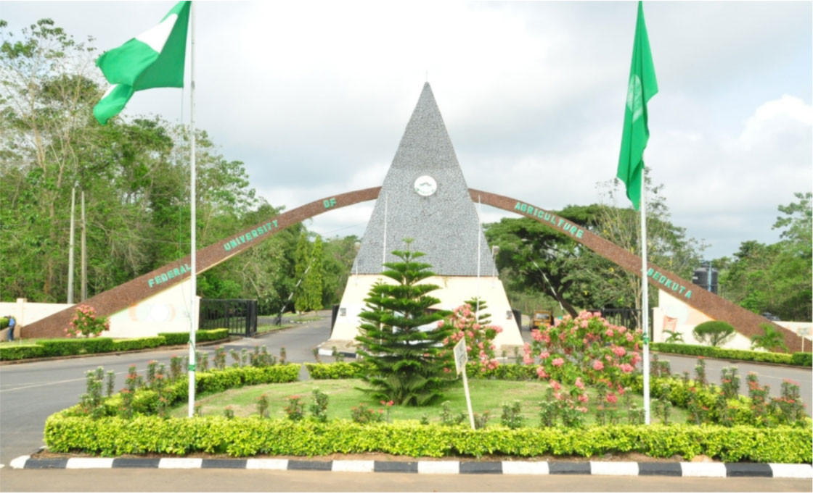
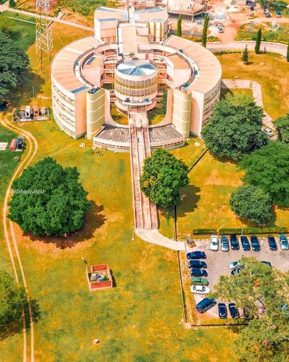
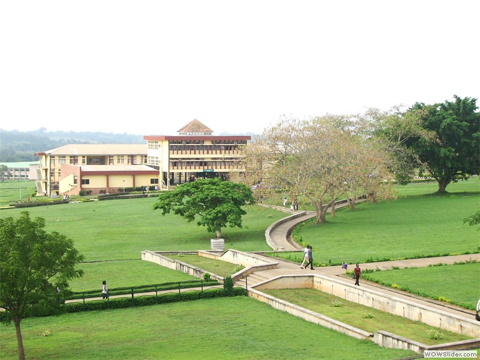
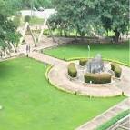
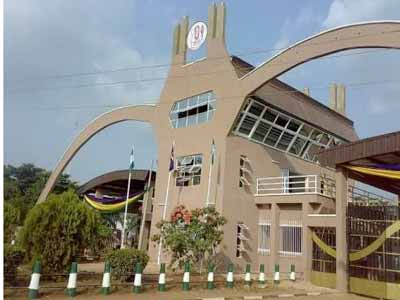

HOME
COLLEGES
College of Agricultural Management & Rural Development
College of Animal Science & Livestock Production
College of Biosciences
College of Engineering
College of Entrepreneurial & Development Studies
College of Environmental Resources Management
College of Food Sciences And Human Ecology
College of Physical Sciences
College of Biosciences
College of Plant Science & Crop Production
College of Veterinary Medicine
CENTERS
ALUMNI
Directorate of Academic Planning
Central Laboratory & Biotechnology Centre
Centre of Excellence in Agricultural Development & Sustainable Environment
Directorate of Research, Innovations & Partnerships
International Scholars’ Resource Centre
Bursary
Directorate of Health Services
Directorate of University Farms
Information & Communication Technology Resource Centre
Directorate of Physical Planning
Directorate of Public Relations
Directorate of Works & Services
Directorate of Environmental Management
Agricultural Media Resources & Extension Centre
Centre for Entrepreneurial Studies
Centre for Community-Based Farming Scheme
International Centre for Professional Development
Directorate of Students’ Industrial Work Experience Scheme





University Library
Inaugural Lectures
Student Transcript
FUNAAB Journals
.png) Global Ranking of Academic 2022
Global Ranking of Academic 2022